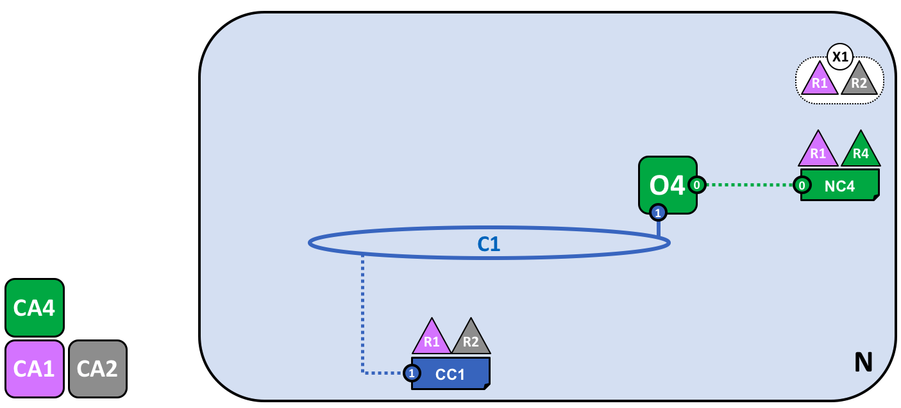
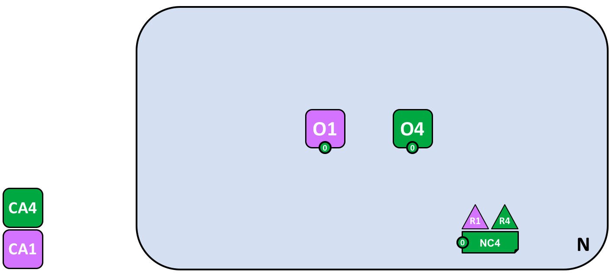

Blockchain network¶
注意:本教程描述的网络使用前面的生命周期过程，其中链码在通道上实例化。这个主题将被更新，以反映Fabric 链码生命周期特性，该特性在v2.0.0的alpha版本中首次引入。
本主题将在概念层次上描述超级账本Fabric如何允许组织在形成区块链网络方面进行协作。如果您是架构师、管理员或开发人员，您可以使用这个主题来深入了解超级账本Fabric区块链网络中的主要结构和流程组件。本主题将使用一个可管理的工作示例，介绍区块链网络中的所有主要组件。理解了这个示例之后，您可以在文档的其他地方阅读关于这些组件的更详细的信息，或者尝试构建一个示例网络。
阅读本主题并理解策略的概念之后，您将对组织需要做出的决策有一个坚实的理解，以便建立控制已部署的超级账本Fabric的策略。您还将了解组织如何使用声明性策略(超级账本Fabric的一个关键特性)管理网络演化。简而言之，您将了解超级账本Fabric的主要技术组件以及组织需要对此做出的决策。
What is a blockchain network?¶
区块链网络是为应用程序提账本和智能合约(链码)服务的技术基础设施。主要地，智能合约用于生成交易，这些交易随后被分发到网络中的每个peer节点，并在每个节点的账本副本上记录下来。应用程序的用户可能是使用客户算应用程序或区块链网络管理员的最终用户。
在大多数情况下，多个组织作为一个联盟聚集在一起形成网络，它们的权限由一组策略决定，这些策略在最初配置网络时由联盟商定。此外，网络策略可以随着时间的推移而变化，这取决于联盟中的组织的协议，我们将在讨论修改策略的概念时发现这一点。
The sample network¶
在开始之前，让我们先展示一下我们的目标!这是一个表示示例网络最终状态的图表。
不要担心这看起来会很复杂!在学习本主题的过程中，我们将逐步构建网络，以便您了解R1、R2、R3和R4组织如何为网络贡献基础设施来帮助形成网络。这个基础设施实现了区块链网络，它由组成网络的组织(如谁可以添加新的组织)同意的策略控制。
 network.structure
network.structure
R1、R2、R3和R4这四个组织已经共同决定，并签署了一份协议，他们将建立和开发一个超级账本Fabric网络。R4被指定为网络启动器——它被赋予设置网络初始版本的权力。R4无意在网络上执行业务交易。R1和R2需要在整个网络中进行私有通信，R2和R3也是如此。组织R1有一个客户端应用程序，可以在通道C1中执行业务交易。R2组织有一个客户端应用程序，它可以在通道C1和C2中执行类似的工作。组织R3有一个客户端应用程序可以在通道C2上实现这一点。peer节点P1维护与C1关联的账本L1的副本。peer节点P2维护与C1关联的账本L1和与C2关联的账本L2的副本。peer节点P3维护与C2关联的账本L2的副本。网络根据网络配置NC4中指定的策略规则进行治理，网络受组织R1和R4的控制。通道C1根据通道配置CC1中指定的策略规则进行管理;通道由R1和R2组织控制。通道C2按照通道配置CC2中指定的策略规则进行管理;通道在R2和R3组织的控制下。有一个排序服务O4作为N的网络管理点，并使用系统通道。排序服务还支持应用程序通道C1和C2，以便将交易排序为区块以便分发。这四个组织都有一个首选的证书颁发机构。
Creating the Network¶
让我们从创建网络的基础开始:
 network.creation
network.creation
当一个排序器启动时，网络就形成了。在我们的示例网络N中，包含单个节点O4的排序服务根据网络配置NC4进行配置，NC4赋予R4组织管理权限。在网络级别，证书颁发机构CA4用于向R4组织的管理员和网络节点分发身份。
我们可以看到，定义网络N的第一个东西是排序服务O4。将排序服务看作是网络的初始管理点是有帮助的。如前所述，O4最初由组织R4中的管理员配置和启动，并托管在R4中。配置NC4包含描述网络初始管理功能集的策略。最初，这只设置为在网络上只授予R4权限。这将会改变，我们稍后会看到，但是现在R4是网络中唯一的成员。
Certificate Authorities¶
您还可以看到一个证书颁发机构CA4，它用于向管理员和网络节点颁发证书。CA4在我们的网络中扮演着关键角色，因为它分发X.509证书，这些证书可用于标识属于组织R4的组件。CA签发的证书也可以用于签署交易，以表明一个组织认可交易结果——这是将交易结果接受到账本上的先决条件。让我们更详细地研究一下CA的这两个方面。
首先，区块链网络的不同组件使用证书相互标识自己来自特定组织。这就是为什么支持区块链网络的CA通常不止一个——不同的组织经常使用不同的CA。我们将在网络中使用四个CA;每个组织一个。的确，CA是如此重要，以至于超级账本Fabric为您提供了一个内置的CA(称为Fabric-CA)来帮助您开始工作，尽管在实践中，组织将选择使用它们自己的CA。
证书到成员组织的映射是通过一个称为成员服务提供者(MSP)的结构实现的。网络配置NC4使用一个命名的MSP来标识CA4分发的证书的属性，CA4将证书持有者与组织R4关联起来。然后，NC4可以在策略中使用这个MSP名称来授予来自R4的参与者对网络资源的特殊权限。这种策略的一个例子是识别R4中的管理员，他们可以向网络添加新的成员组织。我们没有在这些图上显示MSP，因为它们只会把它们弄乱，但是它们非常重要。
其次，我们将在稍后看到CA颁发的证书如何成为交易生成和验证过程的核心。具体来说，X.509证书用于客户端应用程序交易提议和智能合约交易响应中，以便对交易进行数字签名。随后，承载账本副本的网络节点在接受账本上的交易之前验证交易签名是否有效。
让我们回顾一下示例区块链网络的基本结构。有一个资源，网络N，由证书颁发机构CA4定义的一组用户访问，这些用户对网络N中的资源拥有一组权限，这些权限由网络配置NC4中包含的策略描述。当我们配置并启动排序服务节点O4时，所有这些都变为现实。
Adding Network Administrators¶
NC4最初配置为只允许R4用户在网络上拥有管理权限。在下一阶段，我们将允许组织R1用户管理网络。让我们看看网络是如何发展的:
 network.admins
network.admins
组织R4更新网络配置，使组织R1也成为管理员。在这一点之后，R1和R4对网络配置具有同等的权限。
我们看到添加了一个新的组织R1作为管理员——R1和R4现在在网络上拥有相同的权限。我们还可以看到已经添加了证书颁发机构CA1——它可以用来标识来自R1组织的用户。在此之后，R1和R4的用户都可以管理网络。
虽然排序器节点O4运行在R4的基础设施上，但是R1对它拥有共享的管理权限，只要它能够获得网络访问。这意味着R1或R4可以更新网络配置NC4，使R2组织成为网络操作的子集。这样，即使R4正在运行排序服务，R1对其拥有完全的管理权限，R2创建新联盟的权限是有限的。
在其最简单的形式中，排序服务是网络中的一个节点，这就是您在示例中看到的。排序服务通常是多节点的，并且可以配置为在不同的组织中拥有不同的节点。例如，我们可以在R4中运行O4并将其连接到O2，这是组织R1中的一个单独的排序器节点。这样，我们就有了一个多站点、多组织的管理结构。
我们将在本主题的稍后部分进一步讨论排序服务，但是现在只将排序服务看作一个管理点，它提供对网络的不同组织控制的访问。
Defining a Consortium¶
虽然现在网络可以由R1和R4管理，但是几乎没有什么可以做的。我们需要做的第一件事是定义一个联盟。这个词的字面意思是“一个有着共同命运的团体”，所以对于区块链网络中的一组组织来说，这是一个合适的选择。
让我们来看看联盟是如何定义的:
 network.consortium
network.consortium
网络管理员定义一个包含两个成员(组织R1和R2)的联盟X1。这个联盟定义存储在网络配置NC4中，将在网络开发的下一阶段使用。CA1和CA2分别是这些组织的证书颁发机构。
由于NC4的配置方式，只有R1或R4可以创建新的联盟。这个图显示了一个新的联盟X1的添加，它将R1和R2定义为组成它的组织。我们还可以看到CA2被添加到R2中来识别用户。请注意，一个联盟可以有任意数量的组织成员——我们只展示了两个，因为这是最简单的配置。
为什么联盟很重要?我们可以看到，一个联盟定义了网络中的一组组织，它们都需要彼此进行交易——在本例中是R1和R2。如果组织有一个共同的目标，那么将它们组织在一起是很有意义的，而这正是正在发生的事情。
网络虽然由一个组织启动，但现在由一组更大的组织控制。我们可以这样开始，R1、R2和R4共享控制，但是这种构建使它更容易理解。
现在，我们将使用联盟X1创建一个非常重要的超级账本Fabric区块链的部分——一个通道。
Creating a channel for a consortium¶
让我们创建Fabric区块链网络的这个关键部分——一个通道。通道是一个主要的通信机制，通过它，联盟的成员可以彼此通信。网络中可以有多个通道，但是现在，我们先从一个开始。
让我们看看第一个通道是如何添加到网络的:
network.channel
使用联盟定义X1为R1和R2创建了通道C1。通道由通道配置CC1控制，完全独立于网络配置。CC1由R1和R2管理，它们对C1拥有相同的权限。R4在CC1中没有任何权限。
通道C1为联盟X1提供了一个私有通信机制。我们可以看到通道C1已经连接到排序服务O4，但是没有附加任何其他内容。在网络开发的下一个阶段，我们将连接组件，如客户端应用程序和peer节点。但在这一点上，通道代表了未来连接的潜力。
尽管通道C1是网络N的一部分，但它与网络N是有很大区别的。还要注意，组织R3和R4不在这个通道中——它用于R1和R2之间的交易处理。在前面的步骤中，我们了解了R4如何授予R1创建新联盟的权限。值得一提的是，R4还允许R1创建通道!在这个图中，创建通道C1的可能是组织R1或R4。同样，请注意，通道可以有任意数量的组织连接到它——我们已经展示了两个，因为它是最简单的配置。
同样，请注意通道C1如何具有与网络配置NC4完全独立的配置CC1。CC1包含控制R1和R2对通道C1拥有的权限的策略——正如我们已经看到的，R3和R4在这个通道中没有权限。R3和R4只有在由R1或R2添加到通道配置CC1中的适当策略时才能与C1交互。一个例子是定义谁可以向通道添加新组织。特别需要注意的是，R4不能将自己添加到通道C1中——它必须而且只能由R1或R2授权。
为什么通道如此重要?通道是有用的，因为它们提供了一种机制，用于联盟成员之间的私有通信和私有数据。通道提供区别于其他通道和网络的隐私。在这方面，超级账本Fabric非常强大，因为它允许组织共享基础设施，同时又保持私有。这里没有矛盾——网络中的不同联盟需要适当共享不同的信息和流程，而通道提供了一种有效的机制。通道提供高效的基础设施共享，同时维护数据和通信隐私。
我们还可以看到，一旦创建了通道，它就在一个非常真实的意义上“自由于网络”。只有在通道配置中显式指定的组织才能控制它，从现在到将来。同样，此后对网络配置NC4的任何更新都不会对通道配置CC1产生直接影响;例如，如果更改了联盟定义X1，则不会影响通道C1的成员。因此，通道是有用的，因为它们允许组成通道的组织之间进行私人通信。此外，通道中的数据与网络的其他部分(包括其他通道)完全隔离。
另外，还定义了一个特殊的系统通道供排序服务使用。它的行为与常规通道完全相同，因此常规通道有时称为应用程序通道。我们通常不需要担心这个通道，但是我们将在本主题的后面对此进行更多的讨论。
Peers and Ledgers¶
现在让我们开始使用通道将区块链网络和组织组件连接在一起。在网络开发的下一个阶段，我们可以看到我们的网络N刚刚获得了两个新的组件，即peer节点P1和账本实例L1。
 network.peersledger
network.peersledger
peer节点P1已加入通道C1。P1物理上承载着账本L1的副本。P1和O4可以使用通道C1进行通信。
peer节点是承载区块链账本副本的网络组件!最后，我们开始看到一些可识别的区块链组件!P1在网络中的目的纯粹是为了存放L1账本的一个副本供其他人访问。我们可以将L1看作物理上托管在P1上，但是逻辑上托管在通道C1上。当我们向通道添加更多的peer时，我们会更清楚地看到这个想法。
P1配置的一个关键部分是由CA1发布的X.509身份，它将P1与组织R1关联起来。一旦P1启动，它就可以使用排序器O4连接通道C1。当O4接收到这个连接请求时，它使用通道配置CC1来确定P1在这个通道上的权限。例如，CC1确定P1是否可以读写账本L1的信息。
注意peer点是如何由拥有它们的组织连接到通道的，尽管我们只添加了一个peer节点，但是我们将看到网络中的多个通道上如何有多个peer节点。稍后我们将看到peer可以扮演的不同角色。
Applications and Smart Contract chaincode¶
既然通道C1上有一个账本，我们就可以开始连接客户端应用程序，以使用账本的主要工作人员（即peer）提供的一些服务了!
注意网络是如何发展的:
 network.appsmartcontract
network.appsmartcontract
一个智能合约S5已经安装到P1上。组织R1中的客户端应用程序A1可以使用S5通过peer节点P1访问账本。A1、P1和O4都连接到通道C1，即它们都可以使用该通道提供的通信设施。
在网络开发的下一个阶段，我们可以看到客户端应用程序A1可以使用通道C1连接到特定的网络资源——在这种情况下，A1可以连接到peer节点P1和排序器节点O4。同样，请查看通道对于网络和组织组件之间的通信是如何起中心作用的。就像peer和排序器一样，客户端应用程序将具有将其与组织关联的标识。在我们的示例中，客户端应用程序A1与组织R1相关联;虽然它在Fabric区块链网络之外，但是它通过通道C1与之连接。
现在看来，A1可以通过P1直接访问账本L1，但实际上，所有的访问都是通过一个名为智能合约链码的特殊程序S5来管理的。可以认为S5定义了对账本的所有通用访问模式;S5提供了一组定义良好的方法，通过这些方法可以查询或更新账本L1。简而言之，客户端应用程序A1必须通过智能合约S5才能到达账本L1!
每个组织中的应用程序开发人员都可以创建智能合约链码，以实现联盟成员共享的业务流程。智能合约用于帮助生成交易，这些交易随后可以分布到网络中的每个节点。我们稍后会讨论这个想法;当网络更大时，就更容易理解了。现在，需要理解的重要事情是，要达到这一点，必须对智能合约执行两个操作;它必须已经安装，然后实例化。
Installing a smart contract¶
开发出智能合约S5之后，组织R1中的管理员必须将其安装到peer节点P1上。这是一个简单的操作;事件发生后，P1对S5有了充分的了解。具体来说，P1可以看到S5的实现逻辑——它用来访问账本L1的程序代码。我们将此与S5接口进行对比，S5接口只描述S5的输入和输出，而不考虑其实现。
当一个组织在一个通道中有多个peer时，它可以选择在其上安装智能合约的peer;它不需要在每个peer上都安装智能合约。
Instantiating a smart contract¶
但是，仅仅因为P1安装了S5，其他连接到通道C1的组件并不知道它;它必须首先在通道C1上实例化。在我们的示例中，只有一个peer节点P1，组织R1中的管理员必须使用P1在通道C1上实例化S5。实例化后，通道C1上的每个组件都知道存在S5;在我们的示例中，这意味着S5现在可以由客户端应用程序A1调用!
注意，尽管通道上的每个组件现在都可以访问S5，但是它们不能看到它的程序逻辑。这对安装了它的节点仍然是私有的;在我们的例子中，这意味着P1。从概念上讲，这意味着实例化的是智能合约接口，而不是安装的智能合约实现。加强这一观念;安装智能合约显示了我们如何认为它是物理上托管在peer节点上的，而实例化智能合约则显示了我们如何从逻辑上考虑它是由通道托管的。
Endorsement policy¶
实例化时提供的最重要的附加信息是背书策略。它描述了哪些组织必须批准交易，然后才会被其他组织接受到他们的账本上。在我们的示例网络中，只有在R1或R2背书的情况下，交易才能被接受到账本L1上。
实例化行为将背书策略放置在通道配置CC1中;它使通道的任何成员都可以访问它。您可以在交易流程主题中阅读更多关于背书策略的信息。
Invoking a smart contract¶
一旦在peer节点上安装了智能合约并在通道上实例化了它，客户端应用程序就可以调用它。客户端应用程序通过向智能合约背书策略指定的组织所属的peer发送交易提议来实现这一点。交易提议作为智能合约的输入，智能合约使用它生成一个经过背书的交易响应，该响应由peer节点返回给客户端应用程序。
正是这些交易响应与交易提议打包在一起，形成一个完全背书的交易，可以将其分发到整个网络。稍后我们将更详细地讨论这个问题，了解应用程序如何调用智能合约来生成经过背书的交易就足够了。
在网络开发的这个阶段，我们可以看到组织R1完全参与了网络。它的应用程序(从A1开始)可以通过智能合约S5访问账本L1，生成将由R1背书的交易，并因此被账本接受，因为它们符合背书策略。
Network completed¶
回想一下，我们的目标是为联盟X1——组织R1和R2创建一个通道。网络开发的下一阶段将看到组织R2将其基础设施添加到网络中。
让我们看看网络是如何演化的:
 network.grow
network.grow
网络是通过增加R2组织的基础设施而发展起来的。具体地说，R2添加了peer节点P2(承载账本L1的副本)和链码S5。P2也加入了通道C1，应用程序A2也是如此。A2和P2是使用CA2的证书识别的。所有这些意味着应用程序A1和A2都可以使用peer节点P1或P2在C1上调用S5。
我们可以看到组织R2在通道C1上添加了一个peer节点P2。P2还包含账本L1和智能合约 S5的副本。我们可以看到R2还添加了客户端应用程序A2，它可以通过通道C1连接到网络。为了实现这一点，R2组织中的管理员创建了peer节点P2并将其连接到通道C1，与R1中的管理员的方法相同。
我们已经创建了我们的第一个运行网络!在网络开发的这个阶段，我们有一个通道，R1和R2组织可以在其中完全相互交易。具体来说，这意味着应用程序A1和A2可以使用通道C1上的智能合约S5和账本L1生成交易。
Generating and accepting transactions¶
与peer节点(总是承载账本副本)相反，我们看到有两种不同类型的peer节点;那些拥有智能合约的和那些不拥有智能合约的。在我们的网络中，每个peer节点都承载智能合约的副本，但是在更大的网络中，将有更多的peer节点不承载智能合约的副本。peer只能在安装智能合约时运行它，但是它可以通过连接到通道来了解智能合约的接口。
您不应该认为没有安装智能合约的peer节点在某种程度上是较差的。更重要的是，拥有智能合约的peer节点具有一种特殊的能力——帮助生成交易。注意，所有peer节点都可以在其账本L1副本上验证并随后接受或拒绝交易。然而，只有安装了智能合约的peer节点才能参与交易背书过程，而交易背书是生成有效交易的核心。
在本主题中，我们不需要担心交易是如何生成、分发和接受的确切细节——只要了解我们有一个区块链网络，其中组织R1和R2可以作为账本捕获的交易共享信息和流程，就足够了。我们将在其他主题中学习更多关于交易、账本、智能合约的知识。
Types of peers¶
在超级账本Fabric中，虽然所有peer都是相同的，但它们可以根据网络的配置方式承担多个角色。现在，我们对典型的网络拓扑结构有了足够的了解，可以描述这些角色。 -提交peer - 背书peer
Committing peer. Every peer node in a channel is a committing peer. It receives blocks of generated transactions, which are subsequently validated before they are committed to the peer node’s copy of the ledger as an append operation.
Endorsing peer. Every peer with a smart contract can be an endorsing peer if it has a smart contract installed. However, to actually be an endorsing peer, the smart contract on the peer must be used by a client application to generate a digitally signed transaction response. The term endorsing peer is an explicit reference to this fact.
An endorsement policy for a smart contract identifies the organizations whose peer should digitally sign a generated transaction before it can be accepted onto a committing peer’s copy of the ledger.
这是peer的两种主要类型;peer还可以扮演另外两个角色: - 领导人peer - 锚点peer
Leader peer. When an organization has multiple peers in a channel, a leader peer is a node which takes responsibility for distributing transactions from the orderer to the other committing peers in the organization. A peer can choose to participate in static or dynamic leadership selection.
It is helpful, therefore to think of two sets of peers from leadership perspective – those that have static leader selection, and those with dynamic leader selection. For the static set, zero or more peers can be configured as leaders. For the dynamic set, one peer will be elected leader by the set. Moreover, in the dynamic set, if a leader peer fails, then the remaining peers will re-elect a leader.
It means that an organization’s peers can have one or more leaders connected to the ordering service. This can help to improve resilience and scalability in large networks which process high volumes of transactions.
Anchor peer. If a peer needs to communicate with a peer in another organization, then it can use one of the anchor peers defined in the channel configuration for that organization. An organization can have zero or more anchor peers defined for it, and an anchor peer can help with many different cross-organization communication scenarios.
请注意，peer可以同时是提交peer、背书peer、领导人peer和锚点peer!只有锚点peer是可选的——对于所有实际目的，总是会有一个领导peer、至少一个背书peer和至少一个提交peer。
Install not instantiate¶
与组织R1类似，组织R2必须将智能合约S5安装到其peer节点P2上。这是显而易见的——如果应用程序A1或A2希望在peer节点P2上使用S5来生成交易，那么它必须首先出现;安装是实现此目的的机制。此时，peer节点P2拥有智能合约和账本的物理副本;与P1一样，它可以在账本L1的副本上生成和接受交易。
然而，与组织R1相反，组织R2不需要在通道C1上实例化智能合约S5。这是因为组织R1已经在通道上实例化了S5。实例化只需要发生一次;随后加入通道的任何peer都知道通道可以使用智能合约S5。这一事实反映了账本L1和智能合约确实以物理方式存在于peer节点上，并以逻辑方式存在于通道上;R2只是向网络添加了L1和S5的另一个物理实例。
在我们的网络中，我们可以看到通道C1连接两个客户端应用程序、两个peer节点和一个排序服务。由于只有一个通道，所以这些组件只与一个逻辑账本交互。peer节点P1和P2具有与账本L1相同的副本。智能合约S5的副本通常使用相同的编程语言以相同的方式实现，但如果没有，它们必须在语义上等价。
我们可以看到，谨慎地向网络添加peer可以帮助支持增加的吞吐量、稳定性和弹性。例如，网络中更多的peer将允许更多的应用程序连接到它;组织中的多个peer将在计划内或计划外停机的情况下提供额外的弹性。
这一切都意味着，可以配置支持各种操作目标的复杂拓扑——网络的大小没有理论上的限制。此外，单个组织中的peer高效地发现和彼此通信的技术机制(gossip协议)将容纳大量peer节点，以支持此类拓扑。
谨慎地使用网络和通道策略，甚至可以对大型网络进行良好的治理。组织可以自由地向网络添加peer节点，只要它们符合网络商定的策略。网络和通道策略创造了自治和控制之间的平衡，这是去中心化网络的特征。
Simplifying the visual vocabulary¶
现在我们要简化表示示例区块链网络的可视化词汇表。随着网络规模的增长，最初用来帮助我们理解通道的线路将变得很麻烦。想象一下，如果我们添加另一个peer或客户端应用程序或另一个通道，我们的图表将会多么复杂?
这就是我们马上要做的，在我们做之前，让我们先简化一下视觉词汇表。下面是我们目前开发的网络的一个简化表示:
 network.vocabulary
network.vocabulary
图中显示了网络N中与通道C1相关的事实如下:客户端应用程序A1和A2可以使用通道C1与peer P1和P2通信，以及排序器O4。peer节点P1和P2可以使用通道C1的通信服务。排序服务O4可以使用通道C1的通信服务。通道配置CC1适用于通道C1。
注意，通过用连接点替换通道线，简化了网络图，连接点显示为包含通道号的蓝色圆圈。没有任何信息丢失。这种表示更具有可伸缩性，因为它消除了交叉行。这使我们能够更清晰地表示更大的网络。通过关注组件和通道之间的连接点，而不是通道本身，我们实现了这种简化。
Adding another consortium definition¶
在网络开发的下一阶段，我们将介绍组织R3。我们要给R2和R3两个组织一个单独的应用通道让它们可以互相进行交易。这个应用程序通道将完全独立于前面定义的通道，因此R2和R3交易可以对它们保持私有。
让我们回到网络层，为R2和R3定义一个新的联盟X2:
 network.consortium2
network.consortium2
来自组织R1或R4的网络管理员添加了一个新的联盟定义X2，其中包括组织R2和R3。这将用于为X2定义一个新通道。
注意，网络现在定义了两个联盟:X1表示组织R1和R2, X2表示组织R2和R3。引入联盟X2是为了能够为R2和R3创建一个新的通道。
新通道只能由网络配置策略(NC4)中指定的具有适当权限的组织创建，即R1或R4。这是一个策略的例子，它将能够在网络级别管理资源的组织与能够在通道级别管理资源的组织分开。看到这些策略的作用，有助于我们理解为什么超级账本Fabric具有复杂的分层策略结构。
在实践中，联盟定义X2被添加到网络配置NC4中。我们将在文档的其他部分讨论此操作的确切机制。
Adding a new channel¶
现在让我们使用这个新的联盟定义X2来创建一个新的通道C2。为了帮助你加深对更简单的通道符号的理解，我们使用了两种视觉样式——通道C1用蓝色的圆形端点表示，而通道C2用红色连接线表示:
 network.channel2
network.channel2
使用联盟定义X2为R2和R3创建了一个新的通道C2。通道有一个通道配置CC2，完全独立于网络配置NC4和通道配置CC1。通道C2由R2和R3管理，R2和R3对CC2中的策略定义的C2拥有相同的权限。R1和R4在CC2中没有定义任何权限。
通道C2为联盟X2提供了一种私有通信机制。再一次，请注意组织如何在一个联盟中联合起来是什么形式的通道。通道配置CC2现在包含管理通道资源的策略，通过通道C2将管理权分配给组织R2和R3。它完全由R2和R3管理;R1和R4在C2通道没有权力。例如，通道配置CC2随后可以更新，以添加支持网络增长的组织，但这只能由R2或R3完成。
注意通道配置CC1和CC2如何保持完全独立，并且完全独立于网络配置NC4。我们再次看到了超级账本Fabric网络的去中心化本质;一旦创建了通道C2，它就由组织R2和R3独立于其他网络元素进行管理。通道策略始终保持彼此独立，并且只能由授权在通道中这样做的组织更改。
随着网络和通道的发展，网络和通道的配置也将发生变化。有一个过程可以通过受控的方式完成这一过程——包括捕获对这些配置的更改的配置交易。每个配置更改都会生成一个新的配置区块交易，在本主题的后面，我们将看到如何验证和接受这些区块来分别创建更新的网络和通道配置。
Network and channel configurations¶
在我们的示例网络中，我们看到了网络和通道配置的重要性。这些配置非常重要，因为它们封装了网络成员同意的策略，这些策略为控制对网络资源的访问提供了一个共享引用。网络和通道配置还包含关于网络和通道组成的事实，例如联盟及其组织的名称。
例如，当使用排序服务节点O4首次形成网络时，其行为由网络配置NC4控制。NC4的初始配置只包含允许组织R4管理网络资源的策略。NC4随后被更新，以允许R1管理网络资源。一旦进行了此更改，连接到O4的任何组织R1或R4的管理员都将拥有网络管理权限，因为这是网络配置NC4中的策略所允许的。在内部，排序服务中的每个节点记录网络配置中的每个通道，以便在网络级别创建每个通道的记录。
这意味着，尽管排序服务节点O4是创建联盟X1和X2以及通道C1和C2的参与者，但是网络的智能包含在O4遵守的网络配置NC4中。只要O4表现得像一个好的参与者，并且在处理网络资源时正确地实现NC4中定义的策略，我们的网络就会像所有组织已经同意的那样运行。在许多方面，NC4可以被认为比O4更重要，因为它最终控制网络访问。
对于peer，通道配置也适用相同的原则。在我们的网络中，P1和P2也是很好的参与者。当peer节点P1和P2与客户端应用程序A1或A2交互时，它们各自使用通道配置CC1中定义的策略来控制对通道C1资源的访问。
例如，如果A1想访问peer节点P1或P2上的智能合约链码S5，每个peer节点使用其CC1的副本来确定A1可以执行的操作。例如，A1可以根据CC1中定义的策略从账本L1中读取或写入数据。稍后我们将看到通道及其通道配置CC2中的角色的相同模式。同样，我们可以看到，虽然peer和应用程序是网络中的关键参与者，但是它们在通道中的行为更多地是由通道配置策略决定的，而不是其他因素。
最后，了解网络和通道配置是如何在物理上实现的是很有帮助的。我们可以看到网络和通道的配置在逻辑上是单一的——网络有一个，每个通道也有一个。这是很重要的;访问网络或通道的每个组件，对授予不同组织的权限必须共享理解。
即使存在逻辑上的单一配置，但它实际上被构成网络或通道的每个节点复制并保持一致。例如，在我们的网络peer节点P1和P2都有通道配置CC1的副本，当网络完全完成时，peer节点P2和P3都有通道配置CC2的副本。类似地，排序服务节点O4具有网络配置的副本，但是在多节点配置中，每个排序服务节点都有自己的网络配置副本。
网络和通道配置在使用相同区块链技术上都保持一致，无论用于用户交易，还是用于配置交易。要更改网络或通道配置，管理员必须提交一个配置交易来更改网络或通道配置。它必须由在适当策略中标识为负责配置更改的组织签署。这个策略称为mod_policy，我们稍后将讨论它。
事实上，排序服务节点操作一个小型区块链，通过我们前面提到的系统通道连接。使用系统通道排序服务节点分发网络配置交易。这些交易用于在每个排序服务节点上协同维护网络配置的一致副本。以类似的方式，应用程序通道中的peer节点可以分发通道配置交易。同样，这些交易用于在每个peer节点上维护通道配置的一致副本。
物理上分布而逻辑上单一，这种对象之间的平衡是超级账本Fabric中的一种常见模式。例如，象网络配置这种对象，它逻辑上是单一的，但最终会在一组排序服务节点之间进行物理复制。我们还可以在通道配置、账本和某种程度上的智能合约中看到它，这些合约安装在多个位置，但是它们的接口逻辑上存在于通道级别。您可以在超级账本Fabric中多次看到这种模式，它使超级账本Fabric能够同时去中心化和可管理。
Adding another peer¶
既然组织R3能够完全参与通道C2，让我们将其基础设施组件添加到通道中。我们不是一次只做一个组件，而是同时添加一个peer、它的本地账本副本、一个智能合约和一个客户端应用程序!
让我们看看添加了组织R3组件的网络:
 network.peer2
network.peer2
图中显示了网络N中通道C1和C2的相关事实如下:客户端应用程序A1和A2可以使用通道C1与peer P1和P2通信，使用排序服务O4;客户端应用程序A3可以使用通道C2与peer P3通信，并使用排序服务O4。排序服务O4可以使用通道C1和C2的通信服务。通道配置CC1适用于通道C1, CC2适用于通道C2。
首先，请注意，由于peer节点P3连接到通道C2，它与使用通道C1的peer节点具有不同的账本L2。账本L2的有效范围是通道C2。账本L1是完全独立的;它的作用域是通道C1。这是有意义的——通道C2的目的是在联盟X2的成员之间提供私有通信，而账本L2是他们交易的私有存储。
类似地，安装在peer节点P3上并在通道C2上实例化的智能合约S6用于提供对账本L2的受控访问。应用程序A3现在可以使用通道C2调用智能合约S6提供的服务，来生成可以被网络中的每个账本L2副本接受的交易。
此时，我们有一个单独的网络，其中定义了两个完全独立的通道。这些通道为组织之间的交易提供了独立管理的设施。这就是工作中的去中心化;我们在控制和自主之间取得了平衡。这是通过应用于由不同组织控制和影响的通道的策略来实现的。
Joining a peer to multiple channels¶
在网络开发的最后阶段，让我们将重点放在组织R2上。我们可以利用R2是联盟X1和X2的成员这一事实，将其加入多个通道:
 network.multichannel
network.multichannel
图中显示了网络N中通道C1和通道C2的相关事实如下:客户端应用程序A1可以使用通道C1与peer P1和P2通信，排序服务O4;客户端应用程序A2可以使用通道C1与peer P1和P2通信，通道C2与peer P2和P3通信，以及排序服务O4;客户端应用程序A3可以使用通道C2与peer P3和P2通信，并使用排序服务O4。排序服务O4可以使用通道C1和C2的通信服务。通道配置CC1适用于通道C1, CC2适用于通道C2。
我们可以看到R2是网络中的一个特殊组织，因为它是两个应用程序通道中唯一的成员组织!它可以在通道C1上与组织R1进行交易，同时也可以在不同的通道C2上与组织R3进行交易。
请注意peer节点P2如何为通道C1安装了智能合约S5，为通道C2安装了智能合约S6。peer节点P2是两个通道的完整成员，同时通过不同的智能合约为不同的账本服务。
这是一个非常强大的概念——通道既提供了组织分离的机制，也提供了组织间协作的机制。一直以来，这个基础设施都是由一组独立的组织提供并在它们之间共享的。
同样重要的是，peer节点P2的行为控制非常不同，这取决于它交易所在的通道。具体来说，通道配置CC1中包含的策略规定了P2在通道C1中进行交易时可用的操作，而通道配置CC2中的策略控制了P2在通道C2中的行为。
同样，这是可取的——R2和R1同意通道C1的规则，而R2和R3同意通道C2的规则。这些规则是在各自的通道策略中捕获的——它们可以而且必须被通道中的每个组件使用，以强制执行正确的行为。
类似地，我们可以看到客户端应用程序A2现在能够在通道C1和C2上进行交易。同样，它也将由适当通道配置中的策略控制。另外，请注意客户端应用程序A2和peer节点P2使用的是混合的可视化词汇表——包括行和连接。可以看到它们是等价的;它们是视觉上的同义词。
The ordering service¶
细心的读者可能会注意到，排序服务节点似乎是一个集中的组件;它最初用于创建网络，并连接到网络中的每个通道。尽管我们将R1和R4添加到控制排序器的网络配置策略NC4中，该节点仍然运行在R4的基础设施上。在一个去中心化的世界里，这看起来是错误的!
别担心!我们的示例网络展示了最简单的排序服务配置，以帮助您理解网络管理点的概念。事实上，排序服务本身也可以完全去中心化!我们在前面提到，排序服务可以由不同组织拥有的许多单独节点组成，所以让我们看看如何在示例网络中实现这一点。
让我们来看看一个更真实的排序服务节点配置:
network.finalnetwork2
一个多组织排序服务。排序服务包括排序服务节点O1和O4。O1由组织R1提供，节点O4由组织R4提供。网络配置NC4为来自组织R1和R4的参与者定义了网络资源权限。
我们可以看到这个排序服务完全去中心化了——它在组织R1中运行，在组织R4中运行。网络配置策略NC4允许R1和R4对网络资源拥有相同的权限。来自组织R1和R4的客户端应用程序和peer节点可以通过连接到节点O1或节点O4来管理网络资源，因为这两个节点的行为方式相同，这是由网络配置NC4中的策略定义的。在实践中，来自特定组织的参与者倾向于使用由其母组织提供的基础设施，但情况并非总是如此。
De-centralized transaction distribution¶
除了作为网络的管理点之外，排序服务还提供了另一个关键功能——交易的分发点。排序服务是一个组件，它从应用程序中收集经过背书的交易并将其排序到交易区块中，然后将这些交易区块分发到通道中的每个peer节点。在每一个提交peer，交易都会被记录下来，不管交易是有效的还是无效的，它们的本地账本副本也会被适当地更新。
注意排序服务节点O4为通道C1执行的角色与为网络N执行的角色非常不同。当在通道级别执行操作时，O4的角色是收集交易务并在通道C1中分发区块。它根据通道配置CC1中定义的策略执行此操作。相反，当在网络级别执行操作时，O4的角色是根据网络配置NC4中定义的策略为网络资源提供管理点。再次注意，这些角色是如何分别由通道和网络配置中的不同策略定义的。这将增强基于声明策略的配置在超级账本Fabric中的重要性。策略定义并用于控制联盟中每个成员的一致行为。
我们可以看到，与超级账本Fabric中的其他组件一样，排序服务也是一个完全去中心的组件。无论是作为网络管理点，还是作为通道中区块的分发器，其节点都可以根据需要分布到网络中的多个组织中。
Changing policy¶
通过对示例网络的探索，我们已经看到了控制系统中参与者行为的策略的重要性。我们只讨论了一些可用的策略，但是可以声明性地定义许多策略来控制行为的各个方面。这些单独的策略将在文档的其他部分讨论。
最重要的是，超级账本Fabric提供了一个独特的功能强大的策略，允许网络和通道管理员管理策略更改本身!其基本理念是，无论策略变化发生在组织内部或组织之间，还是由外部监管机构强制实施，策略变化都是持续的。例如，新组织可以加入通道，或者现有组织的权限可以增加或减少。让我们进一步研究一下更改策略是如何在超级账本Fabric中实现的。
他们理解的关键点是策略变更是由策略本身内部的策略管理的。修改策略，简称mod_policy，是管理更改的网络或通道配置中的首类策略。让我们举两个简单的例子，说明我们如何使用mod_policy管理网络中的更改!
第一个例子是网络最初建立的时候。此时，只有组织R4被允许管理网络。实际上，这是通过使R4成为网络配置NC4中定义的唯一具有网络资源权限的组织来实现的。此外，NC4的mod_policy只提到了组织R4——只允许R4更改此配置。
然后，我们将网络N改进为允许组织R1管理网络。R4通过在通道创建和联盟创建策略中添加R1实现了这一点。由于这个更改，R1能够定义联盟X1和X2，并创建通道C1和C2。R1在网络配置中对通道和联盟策略具有同等的管理权限。
然而，R4可以通过网络配置为R1授予更多的权力!R4可以将R1添加到mod_policy中，这样R1也可以管理网络策略的更改。
第二种功能比第一种功能强大得多，因为现在R1完全控制了网络配置NC4!这意味着R1原则上可以从网络中删除R4的管理权限。实际上，R4将配置mod_policy，以便R4也需要批准更改，或者mod_policy中的所有组织都必须批准更改。mod_policy具有很大的灵活性，可以使其尽可能复杂，以支持所需的任何更改过程。
这就是mod_policy的作用——它允许将基本配置优雅地演化为复杂的配置。所有这一切都是在所有有关组织的同意下发生的。mod_policy的行为与网络或通道配置中的其他策略相同;它定义了一组允许更改mod_policy本身的组织。
在本小节中，我们只讨论了策略和mod_policy的功能的皮毛。在策略主题中会详细讨论这个问题，但是现在让我们回到已经完成的网络!
Network fully formed¶
让我们用一致的视觉词汇来概括一下我们的网络。我们稍微重新组织了它使用我们更紧凑的视觉语法，因为它更好地适应更大的拓扑:
 network.finalnetwork2
network.finalnetwork2
在这个图中，我们看到Fabric区块链网络由两个应用程序通道和一个排序通道组成。R1和R4负责排序通道，R1和R2负责蓝色的应用程序通道，R2和R3负责红色的应用程序通道。客户端应用程序A1是组织R1的一个元素，而CA1是它的证书颁发机构。注意R2组织中的peer P2可以使用蓝色和红色应用程序通道的通信设施。每个应用程序通道都有自己的通道配置，在本例中是CC1和CC2。系统通道的通道配置是网络配置(NC4)的一部分。
我们已经完成了构建一个示例超级账本Fabric区块链网络的概念之旅。我们创建了一个包含两个通道和三个peer节点、两个智能合约和一个排序服务的四个组织网络。它由四个证书颁发机构支持。它为三个客户端应用程序提供账本和智能合约服务，客户端应用程序可以通过这两个通道与它交互。花点时间浏览一下图表中网络的细节，并随时回顾主题以加强您的知识，或者转到更详细的主题。
Summary of network components¶
下面是我们讨论过的网络组件的快速总结:
Ledger. One per channel. Comprised of the Blockchain and the World state
Smart contract (aka chaincode)
Network summary¶
在本主题中，我们了解了不同的组织如何共享它们的基础设施来提供一个集成的超级账本Fabric区块链网络。我们已经看到了如何将集体基础设施组织成提供独立管理的私有通信机制的通道。我们已经看到了如何通过使用来自各自证书颁发机构的证书来识别来自不同组织的参与者，比如客户端应用程序、管理员、peer和排序器。反过来，我们也看到了策略的重要性，它定义了这些组织参与者在网络和通道资源上拥有的一致同意的权限。